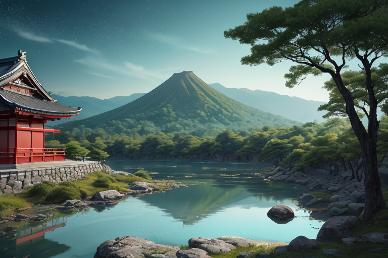
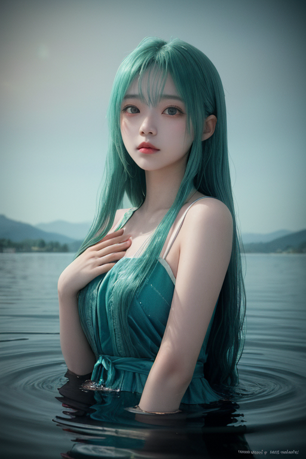
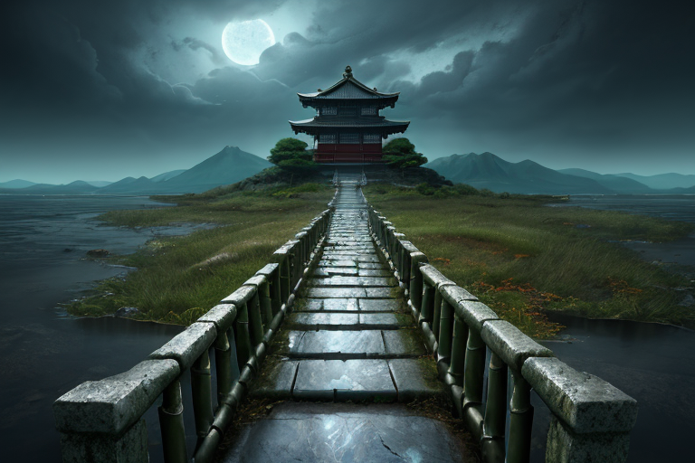
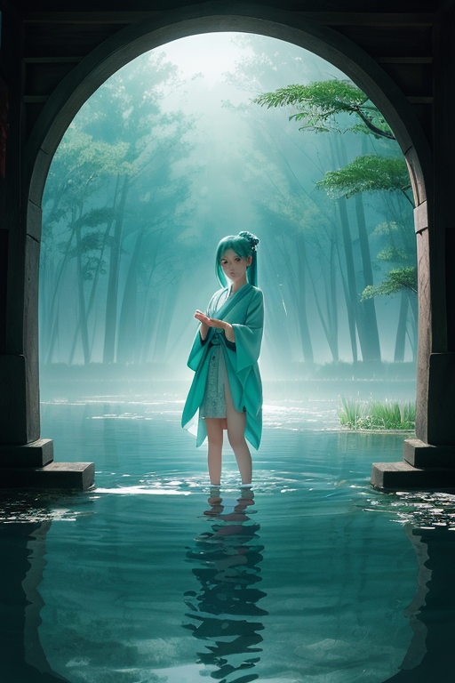
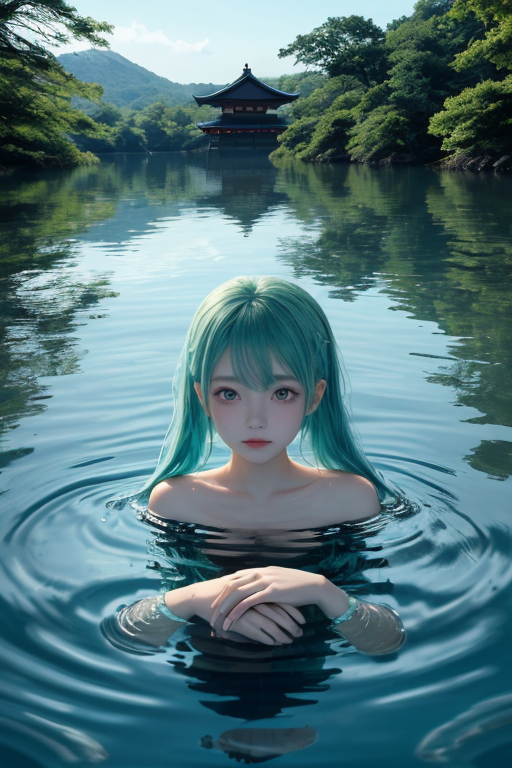

第一章 現実の滋賀
あなたはまだ気づいていない。この土地にも、王がいることを。
琵琶湖の水は、今日も静かに揺れている。比叡山の山肌を撫でる風は、延暦寺の鐘の音を運び、やがて湖面に消える。近江八幡の水郷をゆく舟の櫂の音、彦根城の石垣に刻まれた時の痕跡。すべては、あまりにも穏やかな日常の一部だ。
しかし、この静けさの底には、巨大な「留まり」がある。日本最大の湖は、実は巨大な封印の器だ。地殻の歪みが生み出すエネルギーは、この盆地に集められ、深い湖底に沈殿させられる。それは感情の沈殿でもある。この土地に積もった数百年の記憶、近江商人の往来が残した野心や寂しさ、戦乱と平和の繰り返しが紡いだ祈りや諦念。それらすべてが、透明な水の底に、目に見えない堆積層を形成している。
流れるべき記憶が、留まっている。湖はそれを抱え、静かに腐敗が進まないよう、冷たく清浄な水で包んでいる。ただ、時折、底から微かな泡が上がる。封印された何かが、ため息をついたように。

第二章 歪みの兆候
琵琶湖の水面が、昨日とは違う揺れ方をしていた。無風の朝だというのに、竹生島の辺りから、同心円状の微かな波紋が絶え間なく広がってくる。それは物理的な波ではなく、記憶の圧力による水面の「歪み」だった。
彦根城天守からそれを監視するオウミリア・メモリアの瞳は、深い青に曇りを帯びる。湖底に沈殿させ続けてきた感情の堆積層が、ある臨界点に近づいている。比叡山の杉並木を渡る風に、焼き焦げた経典の匂いが混じる時がある。延暦寺の根本中堂の灯りが、かつての戦火を思い出させてちらつく。近江商人たちの「三方良し」の精神も、その裏にあった孤独や焦燥という沈殿物を、今も湖は抱え続けている。
「王、結界にひびが……」主席妖精メモリアルが囁く。その声は、湖面を伝わる波の音と同調していた。留めるべきか、流すべきか。その判断を、感情を学びつつある王は迫られていた。底から上がる泡は、次第に大きく、頻繁になっていく。

第三章 王の葛藤
竹生島の宝厳寺の石段に腰を下ろし、オウミリア・メモリアは湖面を見つめた。ひびは確かに広がっている。湖底深く、長い年月をかけて沈殿させ、封印してきた「記憶の澱」が、蠢き始めていた。留めるべきか。それとも、堰を切って流すべきか。
「流せば、近江の地に蓄えられた知恵や、人々の営みの細やかな記録までもが希薄になるかもしれません」とメモリアルが言う。その優しい声には、これまで浄化を担ってきたビワリアたちの労苦への思いも込められていた。
だが、澱が膨張し続ければ、やがては制御不能な「記憶の津波」が現実を侵食する。比叡山の学問も、近江商人の機微も、信楽の土の感触さえも、渾然とした感情の奔流に飲み込まれてしまう。
王は自らの内なる「郷愁」という感情を見つめた。それは過去を留めたいという欲求だ。しかし、湖はそもそも流れるもの。水は澱めば腐る。彼はゆっくりと立ち上がった。指先から、青と水色の波紋が幾重にも広がり、ひびに触れていく。決断の時が近づいていた。

第四章 妖精との対話
「王様、この湖は、もともと『流す』ための器でした」
竹生島の祠の前で、主席妖精メモリアルが静かに語り始めた。その声は、湖面を渡る風のようにかすかだった。
「比叡山の僧侶たちの祈り、近江商人の旅愁、この土地で生まれ死んだ無数の人々の喜びや悲しみ…。すべては水に溶け、やがて沈殿する。私たちは、その沈殿した『想いの澱』を、長い時間をかけて浄化し、無害な記憶の層として湖底に眠らせてきました。それが『封印』の正体です」
ビワリアが透き通るような手で、水面をそっと撫でた。
「でも、王様が『郷愁』をお感じになってから、浄化の速度が追いつかなくなった。留めたいという王様の想いそのものが、新たな、強力な澱を生んでいるのです」
オウミリア・メモリアは、湖を隔てて比叡山のシルエットを見つめた。留めることは、腐敗を招く。かといって流し去れば、そこに蓄えられた歴史の厚みそのものが失われる。彼の内なる郷愁が、苦い疼きを覚えた。

第五章 微調整と余韻
オウミリア・メモリアは、湖底に沈む無数の記憶の澱を見つめながら、決断した。留めることも、流すことも、完全ではない。彼が為すべきは、その狭間の微調整だ。彼は王の星から授かった力を、琵琶湖全体に静かに拡げた。強固な封印を修復するのではなく、澱が自然に沈殿し、ゆっくりと分解されるための「流れ」を湖の深層に創り出した。比叡山の鐘の音が、その調整のリズムを刻む。
代償は、彼自身の「郷愁」の一部だった。最も愛おしいと感じていた、湖面に映る幼き日の彦根城の姿。近江商人たちの活気あるざわめき。それらが、調整の過程で、色褪せた絵葉書のように、少しずつ手触りを失っていく。痛みではない。静かな喪失感が、湖王の心に広がった。
やがて、湖は以前よりも透明な深い青を取り戻し、竹生島の鳥居の影がくっきりと映るようになった。澱は消えず、しかし新たな命を育む土壌へと変容し始める。オウミリア・メモリアは、失われた郷愁の代わりに、新たな「静謐」を手にした。それは、流れゆくものと留まるものの、かすかな均衡の音だった。
あなたの町にも、王がいる。